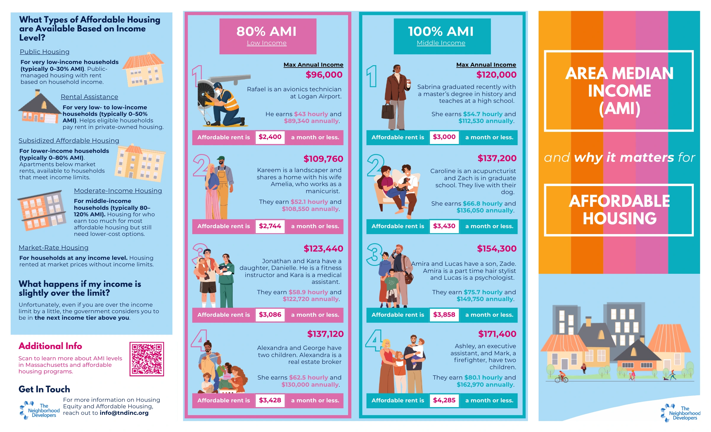
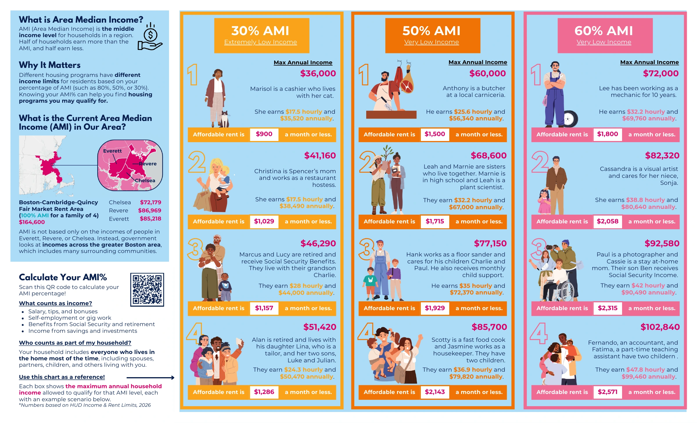
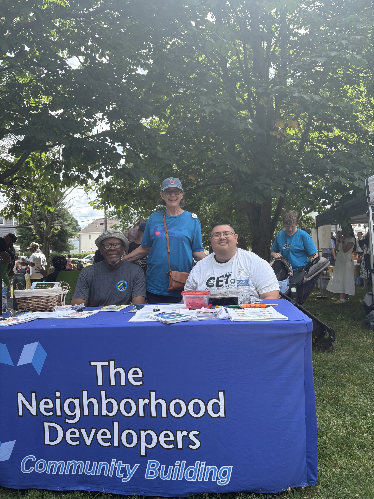
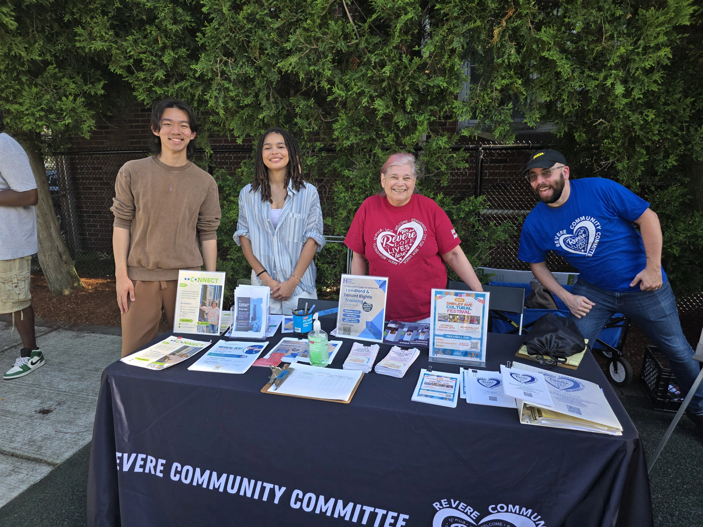

What is AMI and Why is it Important?
Community Education for Affordable Housing
Through the Housing Equity Committee at The Neighborhood Developers (TND), we developed a brochure to introduce AMI and affordable housing to residents of Chelsea, Revere, and Everett, Massachusetts.
Making AMI Easier to Understand
We designed an easy-to-read, easy-to-update brochure that connects Area Median Income (AMI) with everyday life in Massachusetts. Examples of jobs, earnings, and household sizes help readers identify their income level and understand which housing options to explore.
Open the brochure PDF ↗Download PDF ↓


Sharing It with the Community
We tabled at community events in Revere and Chelsea, sharing the brochure with residents and introducing AMI and affordable housing through face-to-face conversations.

